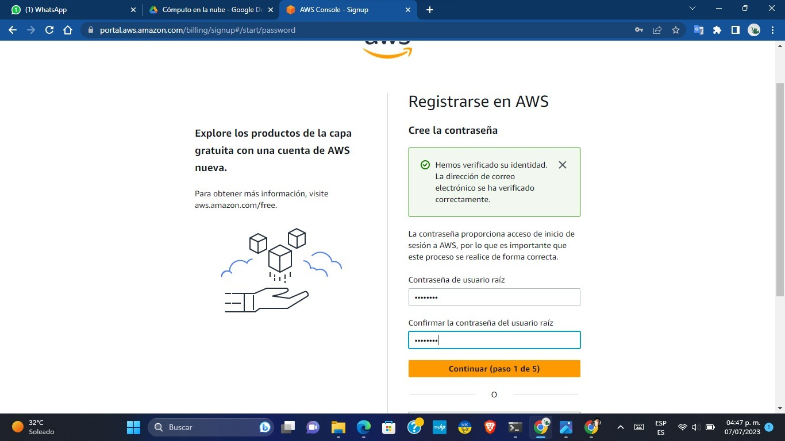
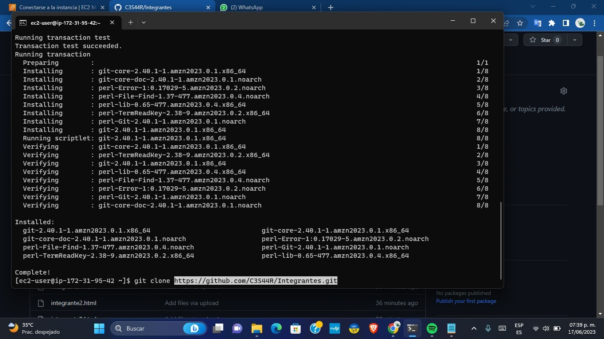

Despliegue de una instancia con Amazon Web Service para un sitio web con Node JS.
Instructivo:
-
1. El primer paso es dirigirnos a nuestro navegador para ingresar al sitio oficial de Amanzon AWS. Daremos clic en el botón "Cree una cuenta AWS" ubicado en la esquina superior derecha e iniciará el proceso para nuestro registro.
-
2. Una vez ya dado en crear una cuenta, nos arrojara un formulario de registro donde nos pedirá nuestro datos, un correo y un nombre para nuestra cuenta.
-
3. Ya dado nuestro correo y nombre de cuenta, nos mandaran al corrreo y un código para introducir para la confirmacion de la cuenta.
-
4. Ahora ya confirmado nos pedira crear una contraseña para nuestra cuenta de Amazon AWS.

-
5. A continuación nos pedira informacion del usuario (Nombre, Numero de telefono, pais, etc) y de como tendra de previsto usar la cuenta, si es empresarial o personal.
-
6. Para continuar con el registro en Amazon AWS nos pedira un numero de cuenta bancaria.
-
7. Nos pedira que ingresemos nuestro numero de telefono para confrima nuestra identidad ingresando un numero telefonico donde nos enviara un codigo mediante un mensaje de voz y SMS.
-
1. Para crear una instancia en AWS buscaremos y seleccionaremos EC2 , encontraremos una barra de herramientas de lado izquierdo. Buscaremos la opcion de Estancia para luego seleccionarla, se meustra el deshboard de las estancias que se tiene. De anterior pantalla seleccionaremos la opcion de Lanzar instancias para abrir el asistente de instalación/creación de las instancias que se requieren.
-
2. El primer paso es darle in nombrea a la instancia.
-
3. Para elegir la imagen del sistema operativo, daremos clic en buscar más AMI y buscaremos la imagen de Amazon Linux 2 Kernel 5.10 tal y como se muestra en la siguiente imagen.
-
4. Para el par de llaves elegiremos la opción de Crear un nuevo par de llaves, este es un archivo que se creará el cual servirá para el acceso de forma segura a la instancia. Ya elegido el nombre de la llave, se crea la llave que más adelante se utilizará.
-
5. Para configurar la red se creara un grupo de seguridad que permitirá el trafico de SSH, esto es muy importante ya que se utilizará el Cliente SSH.
-
6. Para la configuración del almacenamiento se dejará el volumen raíz intacto seguido de esto se agrega un nuevo volumen de 16 Gb y se deja el tipo de gp3
-
7. Después de haber configurado los pasos para crear la instancia, le daremos clic en la opción de Lanzar instancia.
-
1. Para configurar los grupos de seguridad seleccionaremos el apartado de las instancias/Grupos de seguridad y se editaran para colocar nuevas reglas de entrada.
-
2. Ya estando en la ventana de las reglas de entrada colocaremos los tipos de HTTP y TCP personalizado con su origen de cualquier IPv4. Ya agregado las reglas le daremos guardar reglas, estas se agregaran a nuestra instancia
-
1. ara la creación y asignación de una dirección IP elástica nos iremos a la sección de Seguridad y red, dentro de la sección buscaremos Direcciones IP elásticas donde le daremos clic y nos aparecerá la siguiente pantalla. Seleccionaremos Asignar la dirección IP elástica.
-
2. En la pantalla siguiente elegiremos el grupo fronterizo el cual en nuestro caso, lo dejaremos por default, para luego seleccionar asignar.En grupos de direcciones IPv4 publicas, se dejará la primer opción ya que esta ayuda en si requerimos que una dirección de IPv4 se asigne desde un grupo de direcciones IP de Amazon. Ya creada la IP elástica, procederemos a asociarla para nuestra instancia
-
3. Ya elegida la opción antes mencionada nos redirigirá a la pantalla para asociar la IP Elástica a la instancia que se creo anteriormente.Quedando de la siguiente manera tenemos lo siguiente:
- Tipo de recurso: en nuestro caso asociaremos la IP elástica para una instancia.
- Instancia: aquí colocaremos nuestra instancia que creamos o queremos asociar.
- Dirección IP privada: aquí colocaremos nuestra dirección IP que tenemos, en este caso se desliza la opción y es la primera que aparecerá.
-
4. Ya obtenido los datos que nos piden le daremos clic en la opción de Asociar
-
1. Para conectarnos a nuestra instancia mediante el cliente SSH, utilizaremos la terminal de CMD de nuestro equipo y la ejecutaremos desde la carpeta en donde tenemos la llave que generamos anteriormente (key.pem)
-
2. Para utilizar nuestra llave utilizaremos el siguiente comando en el cmd: ssh -i "key.pem" ec2-user@ec2-34-201-242-163.compute-1.amazonaws.com. Ya ejecutado el comando nos aparecerá la siguiente información.
-
1. Ejecutaremos el siguiente comando actualiza los paquetes de Linux. sudo yum update. El siguiente comando instalara git, es un sistema de control de versiones distribuido, lo que significa que un clon local del proyecto es un repositorio de control de versiones completo. sudo yum install git
-
2. Para el siguiente comando es necesario crear un repositorio, en el tendremos todos los archivos para la página. En nuestro caso lo creamos y le colocamos de nombre serveraws

-
3. Este comando se utiliza para fijar como objetivo un repositorio existente con el fin de clonarlo ocopiarlo. git clone *enlace* Para luego ejecutar el comando completo en cmd.

-
4. Se instala y actualiza el NVM, este es un script bash utilizado para administrar múltiples versiones lanzadas de Node .js Una de sus características es que permite realizar operaciones como instalar, desinstalar, cambiar de versión, etc. Para obtener el siguiente comando nos iremos a la pagina de Github para luego seleccionar Instalación y actualización. https://github.com/nvm-sh/nvm#installing-and-updating
-
5. El comando que utilizaremos será el primero que es curl curl -o- https://raw.githubusercontent.com/nvm-sh/nvm/v0.39.3/install.sh | bash
-
6. Instalaremos el NVM node, los comandos a ejecutar son los siguientes:
Este comando es para refrescar los comandos antes ejecutados para actualizar cualquier cambio que se realice.
source ~/.bashrc
-
7. Este comando es para instalar el nvm. Nos aparece que se instalo la versión 20.3.0
nvm install node
-
8. Ejecutaremos el siguiente comando para instalar la versión 16 del node
nvm install 16
-
9. Para terminar y correr nuestra instancia ejecutaremos el siguiente comando: node *carpeta*/server.js
-
10. Ya terminada las configuraciones de la conexión remota obtendremos la URL de la dirección IPv4 del DNS para abrir nuestra página.